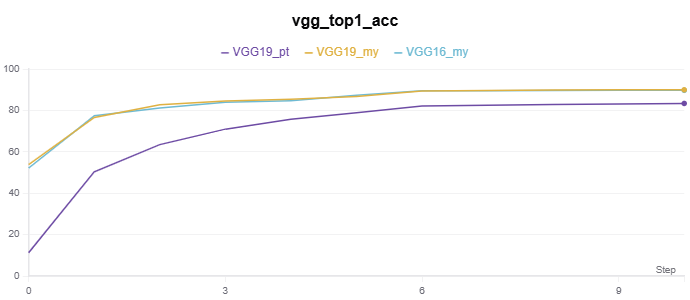
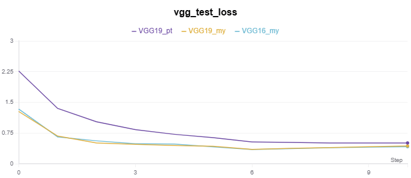

VGG 网络
Very Deep Convolutional Networks for Large-Scale Image Recognition
Simonyan K , Zisserman A .Very Deep Convolutional Networks for Large-Scale Image Recognition[J].Computer Science, 2014.DOI:10.48550/arXiv.1409.1556.
In this work we investigate the effect of the convolutional network depth on its accuracy in the large-scale image recognition setting. Our main contribution is a thorough evaluation of networks of increasing depth using an architecture with very small (3x3) convolution filters, which shows that a significant improvement on the prior-art configurations can be achieved by pushing the depth to 16-19 weight layers. These findings were the basis of our ImageNet Challenge 2014 submission, where our team secured the first and the second places in the localisation and classification tracks respectively. We also show that our representations generalise well to other datasets, where they achieve state-of-the-art results. We have made our two best-performing ConvNet models publicly available to facilitate further research on the use of deep visual representations in computer vision.
摘要：在这项工作中，我们研究了卷积网络深度对其在大规模图像识别设置中的准确性的影响。我们的主要贡献是使用具有非常小（3x3）卷积滤波器的架构对增加深度的网络进行全面评估，这表明通过将深度推至 16-19 权重层可以实现对现有技术配置的显着改进。这些发现是我们 2014 年 ImageNet 挑战赛提交的基础，我们的团队分别在本地化和分类轨道中获得了第一名和第二名。我们还表明，我们的方法可以很好地推广到其他数据集，从而获得最先进的结果。我们已经公开了两个性能最好的卷积神经网络模型，以促进对计算机视觉中深度视觉表示的进一步研究。
VGG 网络架构
架构设计创新：
- 固定输入尺寸为 224 × 224，采用统一的小卷积核（3 × 3）和步长（1），通过填充保持空间分辨率，配合最大池化（2 × 2，步长 2）逐步下采样。
- 移除局部响应归一化（LRN），因其对性能提升有限且增加计算开销。
- 全连接层统一为 3 层（4096-4096-1000），最后一层为 SoftMax 分类器。
VGG 网络配置
翻译自论文中表格 1。
| A | A-LRN | B | C | D | E |
|---|---|---|---|---|---|
| 11 层 | 11 层 | 13 层 | 16 层 | 16 层 | 19 层 |
| 输入层 224 x 224 RGB 图像 | |||||
| conv3-64 | conv3-64 LRN |
conv3-64 conv3-64 |
conv3-64 conv3-64 |
conv3-64 conv3-64 |
conv3-64 conv3-64 |
| 最大池化 | |||||
| conv3-128 | conv3-128 | conv3-128 conv3-128 |
conv3-128 conv3-128 |
conv3-128 conv3-128 |
conv3-128 conv3-128 |
| 最大池化 | |||||
| conv3-256 conv3-256 |
conv3-256 conv3-256 |
conv3-256 conv3-256 |
conv3-256 conv3-256 conv1-256 |
conv3-256 conv3-256 conv3-256 |
conv3-256 conv3-256 conv3-256 conv3-256 |
| 最大池化 | |||||
| conv3-512 conv3-512 |
conv3-512 conv3-512 |
conv3-512 conv3-512 |
conv3-512 conv3-512 conv1-512 |
conv3-512 conv3-512 conv3-512 |
conv3-512 conv3-512 conv3-512 conv3-512 |
| 最大池化 | |||||
| conv3-512 conv3-512 |
conv3-512 conv3-512 |
conv3-512 conv3-512 |
conv3-512 conv3-512 conv1-512 |
conv3-512 conv3-512 conv3-512 |
conv3-512 conv3-512 conv3-512 conv3-512 |
| 最大池化 | |||||
| 全连接层（FC-4096） | |||||
| 全连接层（FC-4096） | |||||
| 全连接层（FC-1000） | |||||
| soft-max | |||||
通过逐步增加卷积层数（11 层到 19 层），验证了网络深度的增加能显著提升分类精度。最佳模型（VGG-16 和 VGG-19）在 ImageNet 2014 挑战赛的分类和定位任务中分别取得第二和第一的成绩。
用三个 3 × 3 的卷积层代替一个 7 × 7 的卷积层：
- 结合了三个非线性校正层而不是单个校正层，这使得决策函数更具区分性；
- 减少了参数的数量，三个 3 × 3 卷积层的叠加等效于一个 7 × 7 卷积层，但参数量减少 81%。
- 这可以看作是对 7 × 7 卷积滤波器施加正则化，迫使它们通过 3 × 3 滤波器（中间注入非线性）进行分解。
1 × 1 卷积层（配置 C，表 1）的结合是一种在不影响卷积层感受野的情况下增加决策函数的非线性的方法。
文中分类实验
实验证明，增加网络深度（16-19层）能显著提升模型表达能力。
- 小卷积核的效益：通过叠加 3 × 3 卷积，在保持感受野的同时减少参数量，并引入更多非线性激活（ReLU），增强模型表达能力。
- 全卷积网络：测试时通过全卷积化处理任意尺寸输入，避免重复计算多个裁剪区域，显著提升效率。
- 多尺度策略：训练和测试时的尺度抖动有效提升模型对尺寸变化的适应能力。
- 参数共享：通过浅层网络预训练初始化深层网络的前几层和全连接层，加速收敛并缓解梯度不稳定问题。
代码自实现
基于 VGG 网络的 CIFAR-10 分类实验代码在 Github。
实验记录如下：
|  |  |
*_my 表示为自实现，_py 表示调用 torchvision.models 的模型
VGG16
class VGG16(nn.Module):
def __init__(self, in_channels=3, num_classes=10):
super(VGG16, self).__init__()
self.features = nn.Sequential(
self._make_conv_block(in_channels, 64, 2), # conv3-64 × 2
nn.MaxPool2d(kernel_size=2, stride=2), # maxpool
self._make_conv_block(64, 128, 2), # conv3-128 × 2
nn.MaxPool2d(kernel_size=2, stride=2), # maxpool
self._make_conv_block(128, 256, 3), # conv3-256 × 2
nn.MaxPool2d(kernel_size=2, stride=2), # maxpool
self._make_conv_block(256, 512, 3), # conv3-512 × 2
nn.MaxPool2d(kernel_size=2, stride=2), # maxpool
self._make_conv_block(512, 512, 3), # conv3-512 × 2
nn.MaxPool2d(kernel_size=2, stride=2), # maxpool
)
self.avgpool = nn.AdaptiveAvgPool2d((7, 7)) # 全局平均池化
self.classifier = nn.Sequential(
nn.Linear(512 * 7 * 7, 4096), # 全连接层（FC 1）
nn.ReLU(inplace=True),
nn.Dropout(0.5),
nn.Linear(4096, 4096), # 全连接层（FC 2）
nn.ReLU(inplace=True),
nn.Dropout(0.5),
nn.Linear(4096, num_classes), # 全连接层（FC 3）
) # nn.CrossEntropyLoss() 计算损失时隐式 soft-max
def _make_conv_block(self, in_channels, out_channels, num_blocks, kernel_size=3, padding=1):
layers = []
for _ in range(num_blocks):
layers.append(nn.Conv2d(in_channels, out_channels, kernel_size=kernel_size, padding=padding))
layers.append(nn.BatchNorm2d(out_channels)) # 每个卷积层后加入nn.BatchNorm2d，显著提升训练稳定性
layers.append(nn.ReLU(inplace=True))
in_channels = out_channels
return nn.Sequential(*layers)
def forward(self, x):
x = self.features(x)
x = self.avgpool(x)
x = torch.flatten(x, 1)
x = self.classifier(x)
return x
VGG19
class VGG19(nn.Module):
def __init__(self, in_channels=3, num_classes=10):
super(VGG19, self).__init__()
self.features = nn.Sequential(
self._make_conv_block(in_channels, 64, 2), # conv3-64 × 2
nn.MaxPool2d(kernel_size=2, stride=2), # maxpool
self._make_conv_block(64, 128, 2), # conv3-128 × 2
nn.MaxPool2d(kernel_size=2, stride=2), # maxpool
self._make_conv_block(128, 256, 4), # conv3-256 × 4
nn.MaxPool2d(kernel_size=2, stride=2), # maxpool
self._make_conv_block(256, 512, 4), # conv3-512 × 4
nn.MaxPool2d(kernel_size=2, stride=2), # maxpool
self._make_conv_block(512, 512, 4), # conv3-512 × 4
nn.MaxPool2d(kernel_size=2, stride=2), # maxpool
)
self.avgpool = nn.AdaptiveAvgPool2d((7, 7)) # 全局平均池化
self.classifier = nn.Sequential(
nn.Linear(512 * 7 * 7, 4096), # FC 1
nn.ReLU(inplace=True),
nn.Dropout(0.5),
nn.Linear(4096, 4096), # FC 2
nn.ReLU(inplace=True),
nn.Dropout(0.5),
nn.Linear(4096, num_classes), # FC 3
)
def _make_conv_block(self, in_channels, out_channels, num_blocks, kernel_size=3, padding=1):
layers = []
for _ in range(num_blocks):
layers.append(nn.Conv2d(in_channels, out_channels, kernel_size=kernel_size, padding=padding))
layers.append(nn.BatchNorm2d(out_channels)) # 每个卷积层后加入nn.BatchNorm2d，显著提升训练稳定性
layers.append(nn.ReLU(inplace=True))
in_channels = out_channels
return nn.Sequential(*layers)
def forward(self, x):
x = self.features(x)
x = self.avgpool(x)
x = torch.flatten(x, 1)
x = self.classifier(x)
return x